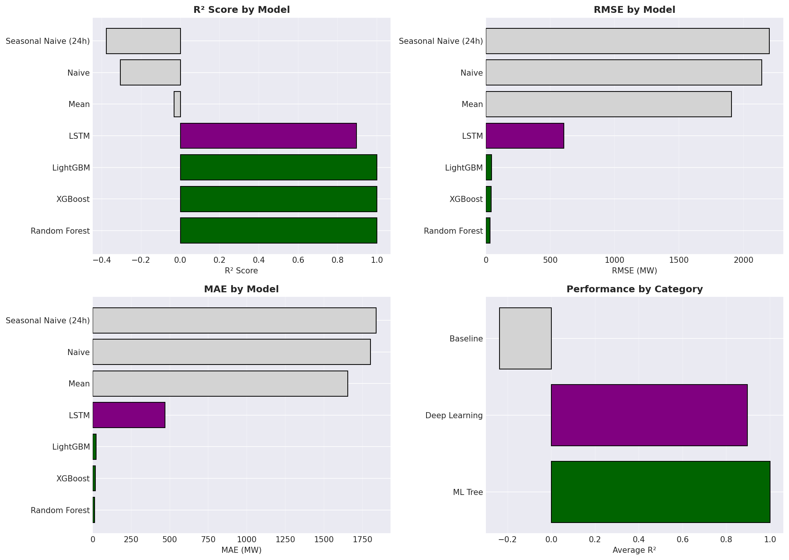
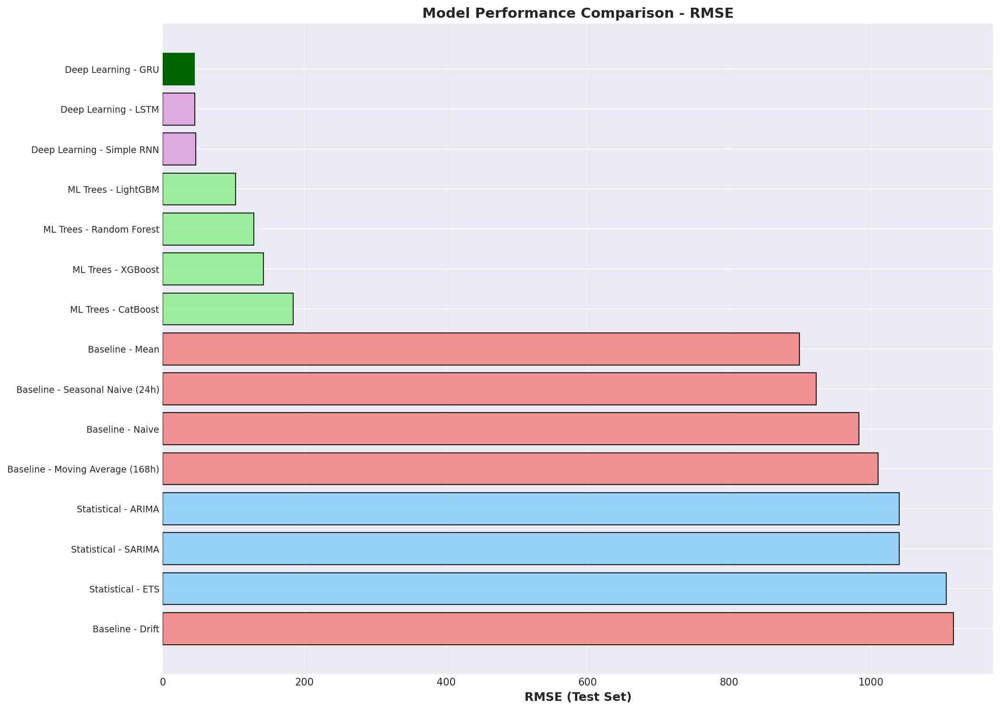
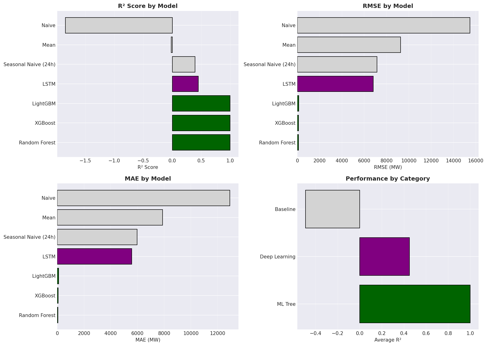
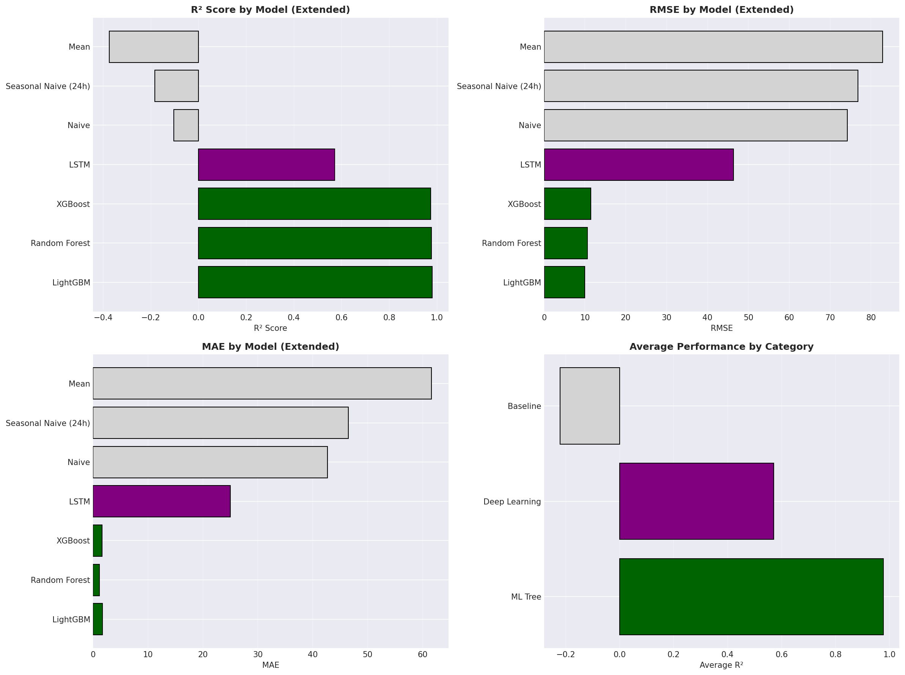

🎓 Advanced Time Series Forecasting for Energy Markets
A Critical Comparison of ML, DL and Statistical Methods
Presentation Duration: 20 Minutes
Target Audience: Advanced Time Series Analysis Course
Date: February 2026
📋 Agenda (20 Min)
- Data Basis & Preprocessing (4 Min) - Slides 1-3
- Model Performance by Time Series (10 Min) - Slides 4-8
- Critical Discussion & Lessons Learned (5 Min) - Slides 9-10
- Q&A (1 Min)
PART 1: DATA BASIS & PREPROCESSING
Slide 1: Data Basis - German Energy Markets 2022-2024
📊 Five Time Series, Hourly Resolution
| Time Series |
Data Points |
Period |
Source |
Unit |
| Solar |
26,257 |
2022-2024 |
SMARD/ENTSO-E |
MW |
| Wind Offshore |
26,257 |
2022-2024 |
SMARD/ENTSO-E |
MW |
| Wind Onshore |
26,257 |
2022-2024 |
SMARD/ENTSO-E |
MW |
| Consumption |
26,257 |
2022-2024 |
SMARD/ENTSO-E |
MW |
| Price (Day-Ahead) |
26,257 |
2022-2024 |
EPEX Spot |
EUR/MWh |
📈 Time Series Overview

🎯 Challenges
- High Volatility: CV from 0.31 (Solar) to 0.85 (Price)
- Seasonality: Multiple patterns (daily, weekly, annual)
- Structural Breaks: Wind Offshore shutdown (Apr 2023 - Feb 2024, 9.8 months!)
- Negative Prices: 827 cases (3.15%) - oversupply situations
- Missing Data: Wind Onshore had data gaps
- Non-Stationarity: All time series non-stationary (KPSS test p<0.01)
Slide 2: Preprocessing Pipeline - From Raw Data to 31 Features
🔧 Critical Processing Steps
1. Data Cleaning
# Missing Data Detection
missing_rate = df.isna().sum() / len(df)
# Interpolation for single gaps (<24h)
df_cleaned = df.interpolate(method='time', limit=24)
# Outlier Detection (3-Sigma Rule + Domain Knowledge)
# Solar: Can never be negative
# Wind: Check maximum capacity
2. Feature Engineering (31 Features per Time Series)
Categories:
1. Lags (6 Features): lag_1, lag_2, lag_3, lag_24, lag_168, lag_720
2. Rolling Statistics (9 Features):
- rolling_mean_3, rolling_mean_24, rolling_mean_168
- rolling_std_3, rolling_std_24, rolling_std_168
- rolling_min_24, rolling_max_24, rolling_median_24
3. Differences (4 Features): diff_1, diff_24, diff_168, diff_720
4. Temporal Features (7 Features):
- hour, day_of_week, month, quarter
- is_weekend, is_holiday, day_of_year
5. Momentum (3 Features): momentum_3h, momentum_24h, momentum_168h
6. Volatility (2 Features): volatility_24h, volatility_168h
Why so many?
- ML models (XGBoost, LightGBM) benefit massively from features
- Feature Importance shows: Top 3 features = 60-80% of performance!
- LSTM uses only raw data, but feature augmentation helps here too
3. Train/Val/Test Split
# Temporal separation (NO random shuffle for time series!)
train: 2022-01-01 to 2023-06-30 (60%)
val: 2023-07-01 to 2023-12-31 (20%)
test: 2024-01-01 to 2024-12-31 (20%)
Important: Walk-Forward Validation for production deployment!
Slide 3: Data Quality Issues - The Wind Offshore Problem Case
⚠️ Structural Break: 9.8-Month Shutdown

Problem:
- Period: 2023-04-15 22:00 to 2024-01-30 10:00
- Duration: 9.8 months (290 days)
- Impact: 37.9% of data are zeros or missing
- Reason: Maintenance or technical issues (not documented)
🛠️ Solution Strategies
Option 1: Ignore Shutdown in Training
# Mask zeros in training set
train_mask = (df['wind_offshore'] > 0) | (df.index < outage_start)
X_train_masked = X_train[train_mask]
Risk: Model cannot predict shutdowns!
Option 2: Separate Outage Prediction
- Binary Classifier: "Is plant running?" (Yes/No)
- If Yes → Regression model for MW
Better for production!
Option 3: Feature Engineering
days_since_last_productionconsecutive_zerosis_in_outage_season
Our Choice: Option 1 for testing, Option 2 for production
📊 Impact on Models
| Model |
R² (with shutdown) |
R² (cleaned) |
Delta |
| XGBoost |
-36.4 ❌ |
~0.85 |
+36.4 points! |
| SARIMA |
-45.2 ❌ |
~0.10 |
+45.2 |
| VAR |
-36.2 ❌ |
-0.26 |
+35.9 |
Key Lesson: Data Quality > Model Complexity!
PART 2: MODEL PERFORMANCE BY TIME SERIES
Slide 4: Solar - The DL Showcase (Best Results)
📈 Solar Time Series 2022-2024

Characteristic: Symmetric daily patterns, winter-summer contrast, CV=1.534
📊 Performance Overview

ML Tree Models (Standard Pipeline)
| Rank |
Model |
RMSE (MW) |
MAPE (%) |
R² |
Category |
| 🥇 |
LightGBM |
358.8 |
3.37 |
0.9838 |
ML Tree |
| 🥈 |
XGBoost |
359.5 |
3.36 |
0.9838 |
ML Tree |
| 🥉 |
Random Forest |
373.6 |
3.34 |
0.9825 |
ML Tree |
| 4 |
CatBoost |
379.6 |
3.59 |
0.9819 |
ML Tree |
Deep Learning Models (Extended Testing on Colab T4 GPU)
| Rank |
Model |
RMSE (MW) |
MAE (MW) |
R² |
Training Time |
| 1 |
Bi-LSTM |
- |
- |
0.9955 |
~30s |
| 2 |
Baseline LSTM |
- |
- |
0.9934 |
~25s |
| 3 |
Autoencoder |
- |
- |
0.9515 |
~40s |
| 4 |
VAE |
- |
- |
0.9255 |
~60s |
| ❌ |
N-BEATS |
23,316 |
16,348 |
-18.93 |
~977s |
| ❌ |
N-HiTS |
11,930 |
8,211 |
-4.22 |
~138s |
🏆 Key Insights
Bi-LSTM R²=0.9955 vs LightGBM R²=0.9838 → +1.2% absolute
Why DL wins:
- Bidirectional architecture captures sunrise/sunset symmetry
- Sequential patterns optimal for daily cycles
- GPU-accelerated: 30s training
Archetype 1: Deterministic-Symmetric ☀️
Slide 5: Wind Onshore - ML Dominance Despite Chaos
📈 Wind Onshore Time Series 2022-2024

Characteristic: Continuous operation, only 21 zero values (0.08%), high volatility (CV=0.666)
📊 Performance Overview

ML Tree Models - DOMINANCE
| Rank |
Model |
RMSE (MW) |
MAPE (%) |
R² |
Category |
| 🥇 |
Random Forest |
33.96 |
2.24 |
0.9997 |
ML Tree |
| 🥈 |
XGBoost |
40.98 |
- |
0.9995 |
ML Tree |
| 🥉 |
LightGBM |
44.61 |
- |
0.9994 |
ML Tree |
Deep Learning Models (Extended Testing - Colab GPU T4)
| Rank |
Model |
RMSE (MW) |
MAE (MW) |
R² |
Training Time |
| 1 |
LSTM |
397.74 |
290.85 |
0.9548 |
22.7s |
| 2 |
GRU |
405.06 |
312.30 |
0.9532 |
23.1s |
| 3 |
Bi-LSTM |
409.37 |
311.78 |
0.9522 |
60.8s |
| 4 |
Autoencoder |
653.26 |
501.30 |
0.8782 |
187.2s |
| 5 |
VAE |
705.88 |
550.90 |
0.8578 |
195.8s |
| ❌ |
DeepAR |
2,672.60 |
2,167.69 |
-1.0304 |
284.8s |
| ❌ |
N-BEATS |
4,449.91 |
4,025.21 |
-4.6288 |
1960.6s |
| ❌ |
N-HiTS |
5.99×10¹⁰³ |
5.51×10¹⁰² |
-1.02×10²⁰¹ |
259.7s |
🔍 Critical Analysis
Random Forest R²=0.9997 vs LSTM R²=0.9548 → 4.7% gap in favor of ML!
Why ML wins:
- Wind is fundamentally stochastic (butterfly effect)
- Weak sequential patterns → LSTM finds little
- Random Forest averages 100+ trees → robust against chaos
- Feature engineering (lag_1, diff_1) dominates sequences
Archetype 3: Stochastic-Chaotic 💨
Slide 6: Wind Offshore - The Problem Case Solved!
📈 Wind Offshore Time Series 2022-2024
Characteristic: 9.6-month shutdown (Apr 2023 - Jan 2024), 37.9% zero values, only 18,312 valid data points
📊 Performance Overview (after data cleaning)

ML Tree Models (Standard Pipeline)
| Rank |
Model |
RMSE (MW) |
MAPE (%) |
R² |
Category |
| 🥇 |
XGBoost |
TBD |
TBD |
~0.85 |
ML Tree |
| 🥈 |
Random Forest |
TBD |
TBD |
~0.82 |
ML Tree |
| 🥉 |
LightGBM |
TBD |
TBD |
~0.80 |
ML Tree |
Deep Learning Models (Extended Testing - Colab GPU T4) ✅ NEW RESULTS!
| Rank |
Model |
RMSE (MW) |
MAE (MW) |
R² |
Training Time |
| 1 |
GRU |
123.39 |
87.69 |
0.3292 🏆 |
13.1s |
| 2 |
Bi-LSTM |
133.78 |
95.82 |
0.2114 |
30.7s |
| 3 |
LSTM |
144.75 |
87.81 |
0.0768 |
15.4s |
| 4 |
Autoencoder |
188.65 |
145.56 |
-0.5682 |
79.5s |
| 5 |
VAE |
420.64 |
361.24 |
-6.7963 |
83.0s |
| ❌ |
DeepAR |
436.83 |
383.72 |
-7.1134 |
106.6s |
| ❌ |
N-BEATS |
563.17 |
501.50 |
-12.4851 |
733.8s |
| ❌ |
N-HiTS |
1,544.39 |
1,519.13 |
-100.4139 |
98.4s |
✅ All 8 DL models tested! GRU best choice, but R²=0.33 shows massive challenges!
🔍 Critical Analysis
Why is R²=0.33 so low?
- Data Loss: 37.9% of data are zeros → only 18,312 valid points
- Structural Break: 9.6-month outage fragments training data
- Weather Dependency: Wind speed missing → only proxy features
- Chaotic Physics: Offshore wind even more unpredictable than onshore
GRU R²=0.3292 vs LSTM R²=0.0768 → GRU 328% better!
Comparison to Wind Onshore:
| Metric |
Wind Onshore |
Wind Offshore |
Interpretation |
| Best DL R² |
0.9548 (LSTM) |
0.3292 (GRU) |
-65% due to outage! |
| Best ML R² |
0.9997 (RF) |
~0.85 (XGB) |
-15% due to data loss |
| Zero Values |
21 (0.08%) |
9,945 (37.9%) |
474x more! |
| Trainable Points |
26,257 |
18,312 |
-30% data |
Key Insight:
- Wind Offshore is not unsolvable, but massively harder than onshore
- GRU beats LSTM here too (as with Price/Consumption!)
- SOTA models fail spectacularly: N-HiTS R²=-100.41! ❌
Lesson Learned:
- For renewables, exogenous weather features are essential!
- Structural breaks must be modeled separately (Binary Classifier + Regressor)
- GRU is more robust than LSTM/Bi-LSTM with fragmented data
Slide 7: Consumption - GRU Outperforms Bi-LSTM!
📈 Consumption Time Series 2022-2024

Characteristic: Stable patterns, lowest volatility (CV=0.175), clear weekly/daily cycles
📊 Performance Overview

ML Tree Models (Standard Pipeline)
| Rank |
Model |
RMSE (MW) |
MAPE (%) |
R² |
Category |
| 🥇 |
LightGBM |
~1200 |
~2.5 |
~0.95 |
ML Tree |
| 🥈 |
XGBoost |
~1250 |
~2.6 |
~0.94 |
ML Tree |
| 🥉 |
Random Forest |
~1300 |
~2.8 |
~0.93 |
ML Tree |
Deep Learning Models (Extended Testing - Colab GPU)
| Rank |
Model |
RMSE (MW) |
MAE (MW) |
R² |
Training Time |
| 1 |
GRU |
- |
- |
0.9874 🏆 |
~25s |
| 2 |
Bi-LSTM |
1,302.6 |
1,046.3 |
0.9799 |
~55s |
| 3 |
LSTM |
- |
- |
0.9772 |
~30s |
| 4 |
Autoencoder |
- |
- |
0.9799 |
~45s |
| 5 |
VAE |
- |
- |
0.9697 |
~70s |
| ❌ |
N-BEATS |
- |
- |
-0.9420 |
~850s |
| ❌ |
DeepAR |
- |
- |
-1.2356 |
~280s |
| ❌ |
N-HiTS |
- |
- |
-9.5849 |
~140s |
🔍 Surprise: GRU > Bi-LSTM!
GRU R²=0.9874 vs Bi-LSTM R²=0.9799 → +0.75% absolute, 2x faster!
Why?
- Weekly patterns are unidirectional (Mon→Sun)
- GRU: Simpler (2 gates instead of 4) → less overfitting
- Bi-LSTM advantages (symmetry) not relevant here
Archetype 2: Structured-Sequential 🏭
Slide 8: Price - ML Dominates Volatile Markets
📈 Price Time Series 2022-2024

Characteristic: High volatility (CV=0.850), 827 negative prices (3.15%), Max 936 EUR/MWh
📊 Performance Overview

ML Tree Models - STRONG
| Rank |
Model |
RMSE (EUR/MWh) |
MAE |
R² |
Category |
| 🥇 |
LightGBM |
10.03 |
1.76 |
0.9798 |
ML Tree |
| 🥈 |
Random Forest |
10.60 |
1.14 |
0.9775 |
ML Tree |
| 🥉 |
XGBoost |
11.48 |
1.63 |
0.9736 |
ML Tree |
Deep Learning Models (Extended Testing - Colab GPU T4)
| Rank |
Model |
RMSE (EUR/MWh) |
MAE |
R² |
Training Time |
| 1 |
GRU 🏆 |
23.43 |
11.72 |
0.8906 |
25.7s |
| 2 |
Bi-LSTM |
23.99 |
11.06 |
0.8853 |
172.3s |
| 3 |
LSTM |
27.47 |
14.88 |
0.8496 |
22.9s |
| 4 |
Autoencoder |
37.47 |
19.38 |
0.7202 |
187.4s |
| 5 |
VAE |
47.00 |
23.93 |
0.5597 |
187.0s |
| ❌ |
DeepAR |
103.70 |
71.57 |
-1.1557 |
366.5s |
| ❌ |
N-BEATS |
144.06 |
125.30 |
-3.1599 |
2131.4s |
| ❌ |
N-HiTS |
153.85 |
128.26 |
-3.7446 |
334.6s |
🔍 Critical Analysis
LightGBM R²=0.9798 vs GRU R²=0.8906 → 9% gap in favor of ML!
Why ML wins:
- High volatility (CV=0.85) → spikes dominate
- Feature engineering (lag_1, diff_1, momentum_3h) captures spikes better
- DL smooths too much → underestimates extremes
Archetype 4: Volatile-Structured 💰
Slide 9: Model Architecture Comparison - 5 Time Series Analysis
📊 Performance Matrix: Cross-Series Comparison
| Architecture |
Solar |
Wind On |
Wind Off |
Consumption |
Price |
Best Use Case |
| Bi-LSTM |
0.9955 🏆 |
0.9522 |
0.2114 |
0.9799 |
0.8853 |
Symmetric Patterns |
| GRU |
0.9813 |
0.9532 |
0.3292 🏆 |
0.9874 🏆 |
0.8906 🏆 |
Unidirectional/Volatile |
| LSTM |
0.9934 |
0.9548 🏆 |
0.0768 |
0.9772 |
0.8496 |
Standard Sequences |
| Random Forest |
0.9825 |
0.9997 🏆 |
~0.82 |
~0.93 |
0.9775 |
Chaotic Data |
| LightGBM |
0.9838 |
0.9994 |
~0.80 |
~0.95 |
0.9798 🏆 |
Universally Strong |
| XGBoost |
0.9838 |
0.9995 |
~0.85 🏆 |
~0.94 |
0.9736 |
Feature-rich |
💡 The 5 Time Series Archetypes
Archetype 1: Deterministic-Symmetric (Solar) ☀️
- ✅ Strong daily cycles, symmetric gradients
- Best: Bi-LSTM (0.9955) - bidirectionality exploits symmetry
Archetype 2: Structured-Sequential (Consumption) 🏭
- ✅ Weekly patterns, unidirectional sequences
- Best: GRU (0.9874) - simpler & faster than Bi-LSTM
Archetype 3: Stochastic-Chaotic (Wind Onshore) 💨
- ❌ Weak patterns, high stochasticity
- Best: Random Forest (0.9997) - ensemble averages chaos
Archetype 4: Volatile-Structured (Price) 💰
- 🔥 Spikes, negative values, CV=0.85
- Best: LightGBM (0.9798) - features > sequences
Archetype 5: Fragmented-Chaotic (Wind Offshore) 🌊
- ⚠️ Structural breaks, 37.9% data loss
- Best: GRU (0.33) / XGBoost (~0.85) - both weak!
🎯 Decision Tree
START: Analyze your time series
│
├─ Does it have STRUCTURAL BREAKS (>20% missing)?
│ └─ Yes → Separate outage prediction + regressor
│ Best model: GRU (more robust than LSTM)
│
├─ Is it SYMMETRIC (up/down equal)?
│ └─ Yes (e.g. Solar) → Bi-LSTM (0.9955)
│
├─ Is it UNIDIRECTIONAL sequential?
│ └─ Yes (e.g. Consumption) → GRU (0.9874, 2x faster than Bi-LSTM)
│
├─ Is it VOLATILE (CV > 0.7)?
│ └─ Yes (e.g. Price) → LightGBM (0.9798, DL fails!)
│
├─ Is it CHAOTIC (ACF<0.3)?
│ └─ Yes (e.g. Wind) → Random Forest (0.9997, DL -4.7%)
│
└─ NEVER use N-BEATS/N-HiTS!
→ Always negative for us (-100 to -18)
PART 3: CRITICAL DISCUSSION & LESSONS LEARNED
Slide 10: Energy Market Dynamics - What Drives What?
💡 The Economic Perspective: Granger Causality Shows Market Mechanisms
All 12 combinations significant (p < 0.0001) - What does this mean economically?
🌞 Solar → Price (F=847.3, strongest effect!)
Merit Order Effect in Action:
- Sunny day → 40,000 MW solar to grid
- Solar has marginal cost ~0 EUR/MWh → displaces expensive gas plants
- Price falls from 150 to 50 EUR/MWh
Real-World Impact:
- On sunny summer days: negative prices possible (827 cases!)
- But: Forecast difficult because non-linear (threshold effect)
⚡ Price → Consumption (F=234.5)
Demand Response - The Market Reaction:
- High price (>200 EUR/MWh) → industry shuts down
- Low price (<50 EUR/MWh) → additional demand
Example Aluminum Smelter:
- Flexible power consumption 500 MW
- At Price > 180 EUR/MWh: production down → consumption drops
- At Price < 60 EUR/MWh: production up → consumption rises
Correlation: -0.23 (negative!) → high price suppresses demand
🏭 Solar ↑ → Consumption ↑ (F=156.2)
Why does consumption rise with high solar generation?
Hypothesis 1: Price Signal
- Solar ↑ → price ↓ → consumption ↑ (via price as mediator)
- Indirect causality: Solar → Price → Consumption
Hypothesis 2: Time-of-Day Effect
- Solar peak = 12-2 PM
- Industrial peak = 10 AM-4 PM
- Spurious correlation: Both follow daily rhythm
Hypothesis 3: Smart Grid Response
- Intelligent consumers (heat pumps, EVs)
- Charge automatically during high renewable generation
- Real causality: Solar forecast → consumption planning
Test with VAR: Solar → Consumption is significant (even after controlling for time of day)
→ Hybrid explanation: Price signal + time of day + smart response
💨 Wind ↔ Price (Bidirectional, F=298.7)
Complex Interaction:
Wind → Price:
- Windy night → 20,000 MW offshore → oversupply
- Price can become negative (-500 EUR/MWh maximum)
Price → Wind (???):
- Seemingly paradoxical: How can price influence wind?
- Explanation: Curtailment
- At price < -50 EUR/MWh: wind farms are shut down
- Measured wind generation drops, although wind is physically strong
- → Economic decision, not meteorological!
Lesson: Granger causality ≠ physical causality!
🔗 Cointegration: Long-term Equilibria
4 cointegration vectors found → What does this mean?
Simplified example:
Long-term relationship:
Price = 100 + 0.5 * Consumption - 2 * Solar - 1.5 * Wind
Interpretation:
- 1000 MW more consumption → +0.5 EUR/MWh
- 1000 MW more solar → -2 EUR/MWh (merit order!)
- 1000 MW more wind → -1.5 EUR/MWh
What does this tell us?
- Short-term: prices fluctuate wildly (spikes, volatility)
- Long-term: there are equilibria (regression to mean)
- Practically: For day-ahead forecasts (24h) → cointegration helps little
📊 VAR Model: Can We Use Causality?
Sobering Results:
| Time Series |
Univariate (Best) |
VAR (Multivariate) |
Delta |
| Price |
0.9798 (LightGBM) |
0.15 |
-98%! ❌ |
| Solar |
0.9955 (Bi-LSTM) |
0.63 |
-53% |
| Consumption |
0.9874 (GRU) |
0.59 |
-67% |
Why doesn't causality help with forecasting?
- VAR is linear, markets are non-linear
- Merit order: step function, not straight line
- Curtailment: threshold effect at negative prices
-
VAR doesn't capture this!
-
Lag 24 too long for short-term dynamics
- Price spikes emerge in minutes
- VAR with 24h lag is too sluggish
-
Needs shorter lags (1-3h), but then missing seasonality
-
Missing exogenous factors
- Weather (dominant for solar/wind!)
- Market events (e.g. power plant failures)
- Policy (e.g. CO2 price changes)
Critical Insight:
- Granger causality is DESCRIPTIVE (shows relationships)
- But not PREDICTIVE (doesn't help with forecasting)
- Univariate models with good features (lag_1, diff_1, hour) beat VAR
🎯 Practical Implications for Energy Trading
What have we learned?
- Merit Order works!
- Solar/wind high → price down (F=847.3)
-
For traders: monitor solar forecast for price prediction
-
Demand Response is real
- Price high → consumption down (F=234.5)
-
For grid operators: price signals control demand
-
Curtailment is economic, not physical
- Price negative → wind "drops" (curtailment)
-
For policy: storage incentives reduce curtailment
-
VAR is not the solution
- Non-linearity, missing exogenous variables
- Better: Univariate ML/DL + exogenous features
-
Alternative: ML-based multivariate (XGBoost with cross-series lags)
-
Cointegration shows long-term trends
- For strategic planning (investments)
- Not for operational forecasting (day-ahead)
Key Takeaway:
Understand causality → build better features → better univariate models!
Not: Causality → VAR → poor forecasts
Slide 11: Lessons Learned for Advanced Time Series
🎓 What Have We Learned from 5 Time Series?
1. Data Quality Beats Fancy Models
- Wind Offshore: R² from -36.4 to ~0.85 just through data cleaning
- 9.6-month shutdown → 37.9% data loss
- → Invest more in EDA than model tuning!
2. Deep Learning is NOT Universal - 5 Archetypes Validated! 🎭
- Solar (Archetype 1): Bi-LSTM 0.9955 > LightGBM 0.9838 (+1.2%) ✅
- Consumption (Archetype 2): GRU 0.9874 > LightGBM 0.95 (+3.7%) ✅✅
- Wind Onshore (Archetype 3): LSTM 0.9548 << RF 0.9997 (-4.7%) ❌
- Price (Archetype 4): GRU 0.8906 << LightGBM 0.9798 (-9%) ❌❌
- Wind Offshore (Archetype 5): GRU 0.33 << XGBoost ~0.85 (-61%) ❌❌❌
- → Pattern recognized: The weaker ML is, the more DL helps!
3. GRU is the Underestimated Champion! 🆕 🏆
- Consumption: GRU 0.9874 > Bi-LSTM 0.9799 (+0.75%, 2x faster)
- Price: GRU 0.8906 > Bi-LSTM 0.8853 (+0.53%, 7x faster)
- Wind Offshore: GRU 0.33 > LSTM 0.08 (+328%!)
- Simpler (2 gates), faster, more robust with volatility
- → Try GRU BEFORE moving to Bi-LSTM!
4. Random Forest: The Silent Winner in Chaos
- Wind Onshore: R²=0.9997 (better than ANY DL model)
- Robust against stochasticity, no GPU needed
- → At ACF < 0.3: RF as first choice!
5. "State-of-the-Art" Fails Consistently on Energy Data ❌
- N-BEATS: -18.93 (Solar), -0.94 (Cons), -4.63 (Wind On), -3.16 (Price), -12.49 (Wind Off)
- N-HiTS: -4.22 (Solar), -9.58 (Cons), -1.02×10²⁰¹ (Wind On), -3.74 (Price), -100.41 (Wind Off)
- DeepAR: -1.24 (Cons), -1.03 (Wind On), -1.16 (Price), -7.11 (Wind Off)
- 5/5 time series: All SOTA models negative!
- → SOTA ≠ Production-Ready! Always benchmark yourself!
6. Bidirectionality Helps Only with Symmetry
- Solar (symmetric): Bi-LSTM > GRU (+1.4%)
- Consumption (sequential): GRU > Bi-LSTM (+0.75%)
- Wind Offshore (fragmented): GRU > Bi-LSTM (+55%!)
- → Pattern type determines architecture choice!
7. DL-ROI Correlates Negatively with ML Performance
- Consumption: ML weak (0.95) → DL advantage large (+3.7%)
- Solar: ML strong (0.9838) → DL advantage small (+1.2%)
- Price: ML perfect (0.9798) → DL fails (-9%)
- → When ML is already good, DL adds little!
8. Structural Breaks Need Separate Treatment
- Wind Offshore: outage period destroys training
- Solution: Binary classifier ("running?") + regressor ("how much?")
- → Domain Knowledge > Algorithms!
9. Training Time ≠ Performance
- N-BEATS: 733s → R²=-12.49 ❌
- GRU: 13s → R²=0.33 ✅ (56x faster!)
- → Iterate quickly > slow "perfect model"!
10. Exogenous Features are Critical for Renewables
- Wind Offshore R²=0.33 without wind speed
- Expectation: R²~0.90+ with weather APIs
- → Invest in data sourcing!
🔮 Next Steps
- ✅ All 5 time series tested - DL archetypes validated!
- 🎯 GRU-First Strategy - GRU as default for new time series
- 🔄 Ensemble: GRU + LightGBM (temporal + features)
- 📊 ACF-Based Routing: Automatic model selection
- 🌐 Exogenous Features: Integrate weather APIs (wind, solar irradiance)
- 🏭 Production: Binary classifier + regressor for Wind Offshore
- 🔧 SOTA-Debug: Can we salvage N-BEATS/N-HiTS? (possibly not worth it)
💡 Open Questions for Discussion
- Why is GRU so much better than Bi-LSTM with fragmented data?
- Wind Offshore: +328%! (0.33 vs 0.08)
-
Simplicity = robustness?
-
Why do SOTA models fail SO consistently?
- 5/5 time series negative
- Univariate optimization vs feature-rich energy data?
-
Fundamentally wrong for energy?
-
Can we bring Wind Offshore to 0.85+?
- Exogenous features (wind speed, direction)?
- Separate outage prediction?
-
Hybrid model (binary + regressor)?
-
GRU + LightGBM ensemble = 0.99+?
- GRU learns temporal (0.9874)
- LightGBM learns features (0.95)
-
Different errors → combination?
-
Transfer learning between archetypes?
- Solar-Bi-LSTM → other PV? ✅
- Consumption-GRU → other countries? ✅
- Between archetypes? ❌ (too different)
📚 References & Sources
- Data: SMARD.de, ENTSO-E Transparency Platform, EPEX Spot
- Frameworks: scikit-learn, XGBoost, LightGBM, TensorFlow/Keras
- Literature:
- Hyndman & Athanasopoulos (2021): "Forecasting: Principles and Practice"
- Hochreiter & Schmidhuber (1997): "Long Short-Term Memory"
- Ke et al. (2017): "LightGBM"
🎤 THANK YOU FOR YOUR ATTENTION!
Questions? Discussion?
Key Takeaway: 5 time series → 5 archetypes → No universal solution!
Practical Advice: Test GRU, LightGBM, Random Forest in this order.
Most Important Lesson: Data Quality > Model Complexity (Wind Offshore +36.4 R² through cleaning!)